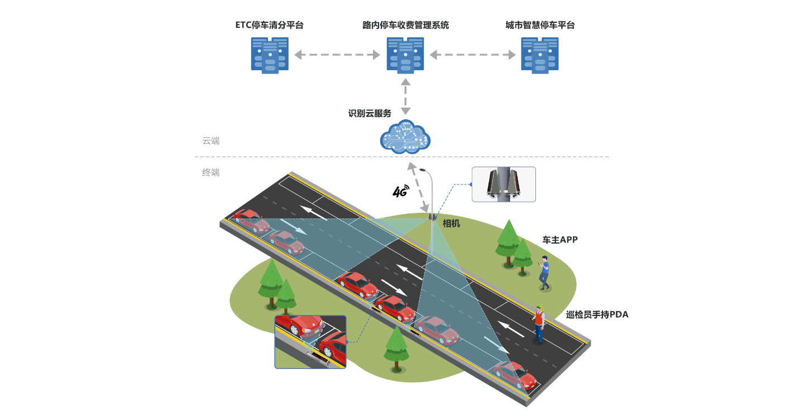
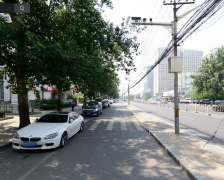
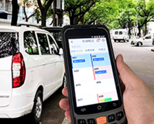
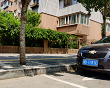
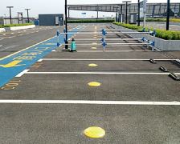
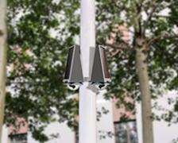

路内停车管理系统主要用于道路上的路内停车泊位的收费管理，该系统主要服务于路内停车泊位的管理者，提高停车泊位收费管理和车主
使用体验、收集路内停车泊位的停车数据。该系统通过识别相机检测车位上是否有车以及识别车辆的车牌号码，实现路内停车泊位收费管理的
智能化、信息化。路内停车管理系统的硬件设备主要包括：免布线相机、手持PDA、云端识别服务器。

路内停车管理系统支持5种采集方式，可根据客户的需求进行灵活的组合，形成一个综合采集方案，实现路内泊位的设备100%覆盖，
保证路内停车数据的时效性。

高杆车牌采集

PDA人工车牌采集

路牙相机车牌采集

雷达泊位占用采集

中杆采集